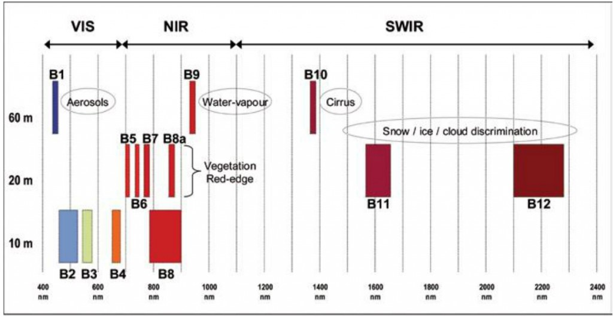

Open data mit Open source - Prozessierung von Copernicus Daten mit freier (Kommandozeilen-) Software
Einführung
Sentinel-2
- Momentan S2A und S2B
- Land und Küste
- Überflug alle 5 Tage über Europa, Afrika und Grönland, Rest der Welt alle 10 Tage
Multispektrales Instrument mit 13 Kanälen:

Daten
L1C: radiometrisch und geometrisch korrigierte TOA (Top Of Atmosphere), orthorektifiziert und räumlich registriert auf einem globalen CRSL2A: Bottom-Of-Atmosphere (BOA) korrigiert, teilweise von ESA bereitgestellt (bisher nur Europa)
JPEG2000 verlustfrei komprimierte Bilder mit zugehörigen Metadaten, alles verpackt im SAFE Format